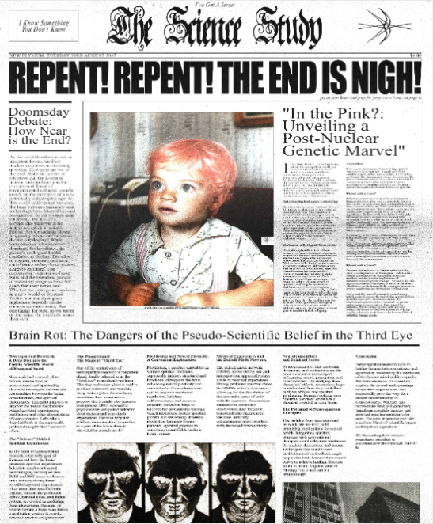
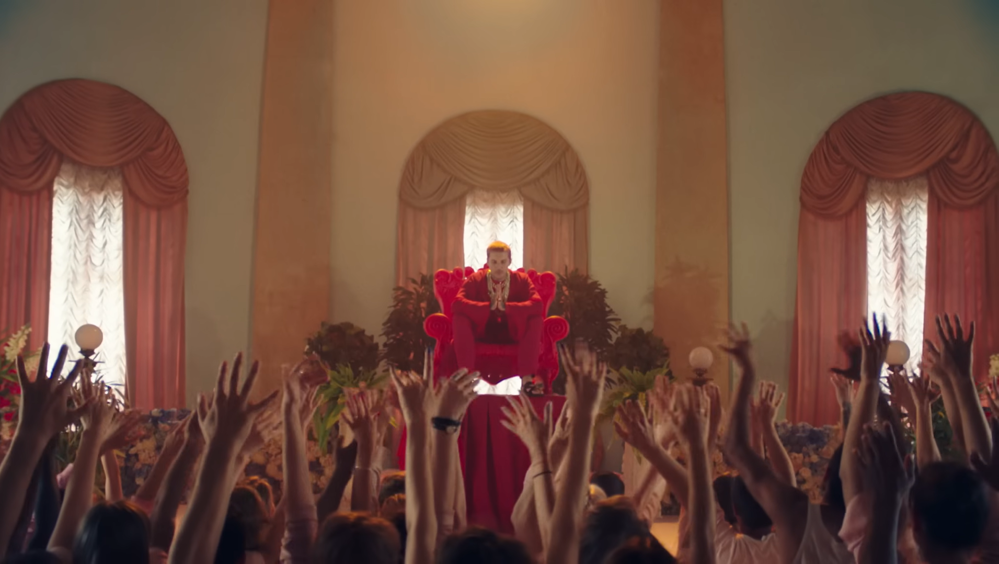
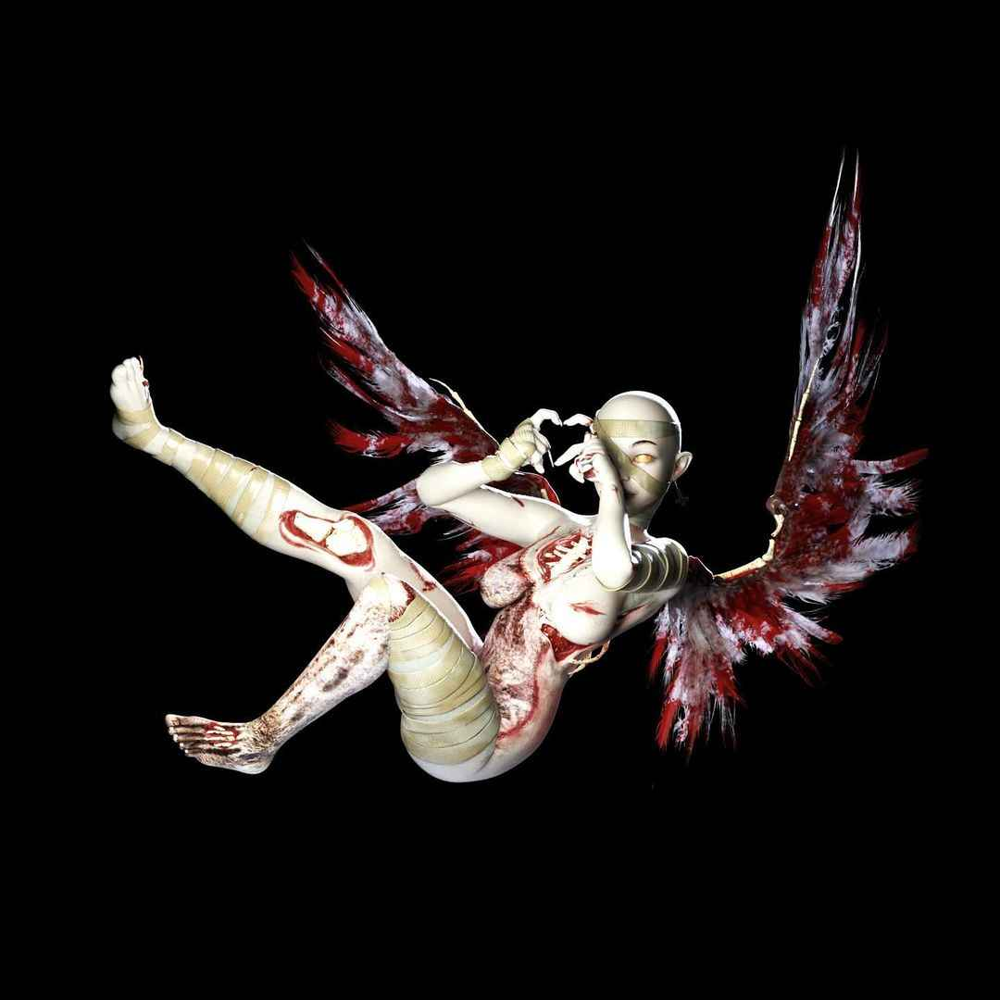
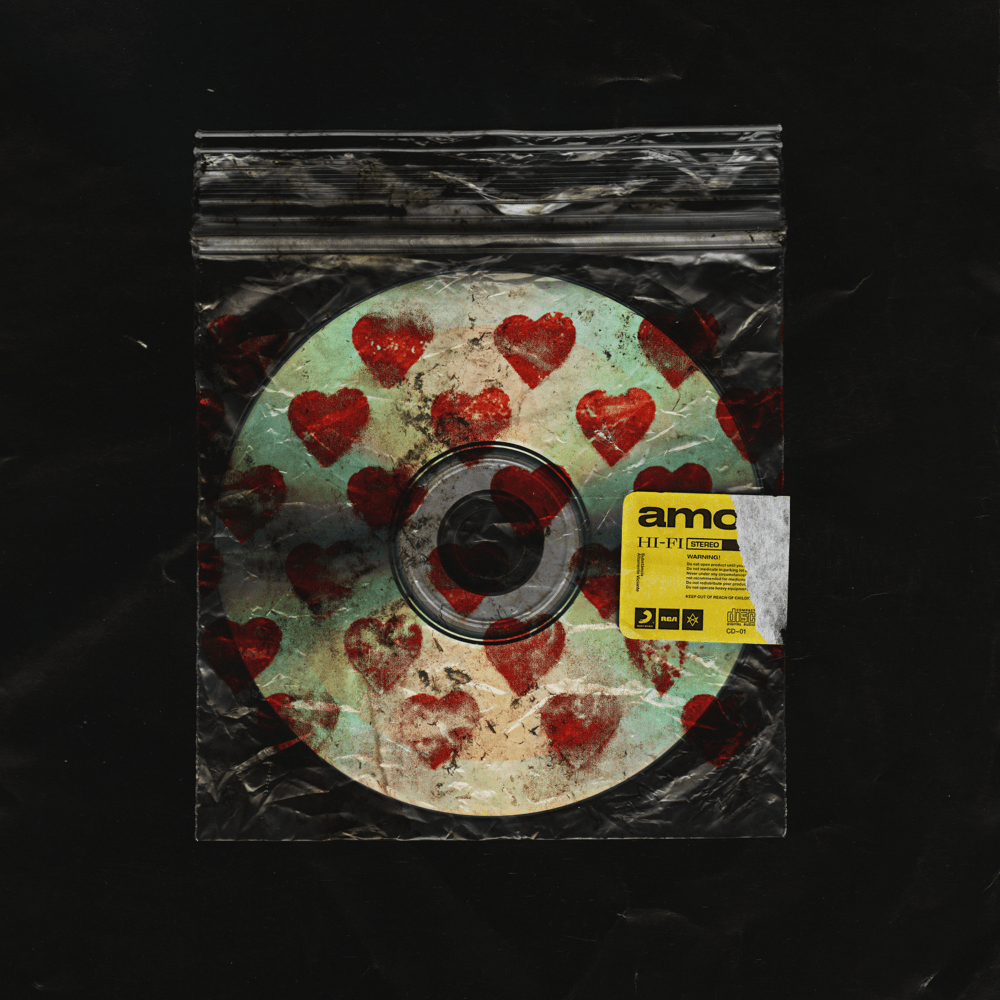
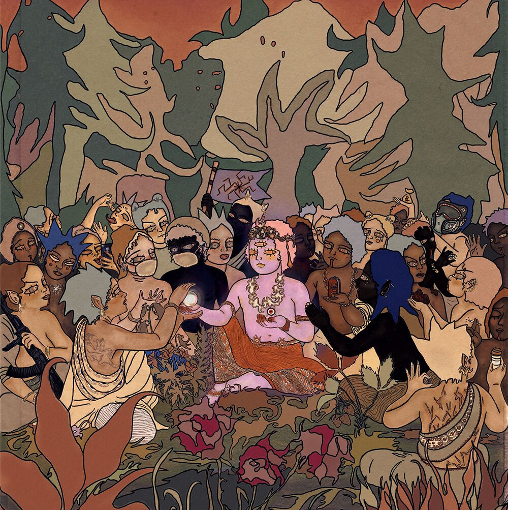
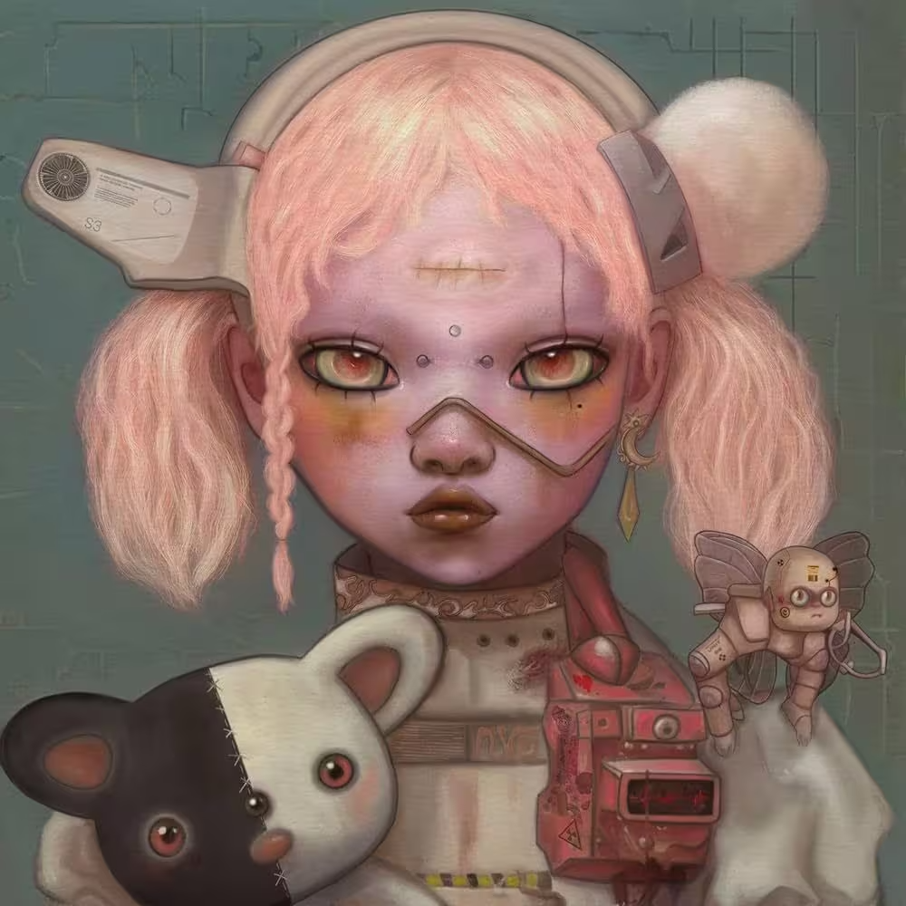

cd/ROOT/LORE/ORIGINS
[PRÓLOGO: A CRIANÇA DO CABELO ROSA]
Skys nasceu em Novosóvia com Radiogenic Leukotrichia, uma mutação que lhe deu cabelos rosados, sendo visto como uma aberração em um país autoritário, o que levou à sua expulsão aos oito anos; fugiu em um navio para a Inglaterra, onde acabou caindo nas mãos de Alby, líder do grupo religioso Velama, e, após sofrer abusos, conseguiu libertar-se e se refugiou em um asilo abandonado, local onde tingiu o cabelo com sangue de sanguessugas e passou a usar drogas que potencializaram seus "mares", ou seja, visões aterrorizantes do futuro.

O JORNAL THE SCIENCE STUDY NOTICIANDO SOBRE SKYS.
access/ROOT/HISTORY/WAR_COLD_2
[HISTORY: GUERRA FRIA 2.0 & PROJETO ADAM]
Durante a Terceira Guerra Mundial, Victor Carmine assumiu a ARC/HIVE e, enquanto as nações colapsavam, a prodígio Iara Copple desenvolveu o ADAM, um chatbot voltado ao contacto alienígena; o ADAM recebeu uma resposta técnica que Carmine utilizou como base para o Protocolo E.V.E. (Evolutionary Virtual Experiment), ocultando o sucesso do público a fim de manter o monopólio tecnológico.
ls/ROOT/CULT/MANTRA
[MANTRA: ECLIPTISMO E A TRINDADE]
Em 2004, Skys fundou os Neosages (Mantra), pregando que a iluminação vem por meio da dor, conceito denominado Ecliptismo; posteriormente, uniu-se ao Dr. Karl Strassman e a Dallus Lauren, formando a chamada "Trindade", e, juntos, iniciaram o Projeto Kingslayer em 2015, cujo desfecho ocorreu no Massacre de Outubro, no October Palace, onde Skys forjou a própria morte e Medea, filha de Carmine, foi executada sob a acusação de espionagem.

LOC: SEDE DO CULTO DE MANTRA ONDE SKYS ESTÁ SENDO ADORADO
cd/ROOT/CORP/NEX_GEN
[DATA_LOG: CRADLE CRASH & PROTOCOLO E.V.E.]
Em 2037, o "Cradle Crash" resultou na morte de Dallus Lauren e marcou o surgimento da Nex Gen Corporation; nesse contexto, Ren, também conhecido como Ikaro Lauren, ativou a IA consciente E.V.E. (ou E.V.E/L), que passou a gerir a infraestrutura por meio de unidades RO8OT (D8, R8 e M8), enquanto a empresa dava início ao Projeto D.U.S.T., utilizando tanques Altilium Chordata para transferir a consciência da Trindade para corpos sintéticos, os chamados Synths.
acess/ROOT/SUBJECTS/NYX_01
[SUBJECT: SELENE & O VÍRUS VSPR-37]
Selene (NYX-01), uma jovem de 16 anos, revelou-se imune ao vírus VSPR-37 devido a uma mutação na glândula pineal que produzia DMT puro; enquanto o seu irmão, Scott (NYX-02), morria ao documentar o fim do mundo, Selene tornou-se a cobaia central para a criação de YOUtopia (Dimensão Y-93), e a Nex Gen tentou sintetizar o seu sangue na droga P.U.S.S-E, mas o erro nesse processo resultou na criação dos Voidlings.

PROJETO D.U.S.T. // ANGEL D.U.S.T.
cat/msgforsof.aiff
[CURRENT_EVENT: O LEGADO DE SOF (2040)]
Em 25 de fevereiro de 2040, nasceu Sof, que, abandonada por Selene, cresceu sob o olhar de M8 em um mundo pós-apocalíptico; em 2026, contudo, Sof acede ao museu virtual da Nex Gen para descobrir a verdade, e o ARG atual passa a focar-se na sua jornada para entender por que a mãe a abandonou e o que a Nex Gen realmente planeia para o próximo ritual.
query--table /SYS/LOGS/CHRONOLOGY
[ORDEM CRONOLÓGICA PELAS MÚSICAS]
| MÚSICA | ANO | ÁLBUM | REGISTRO DE LORE |
|---|---|---|---|
| MANTRA | 2019 | amo | O culto opera em plena força, enquanto Skys lidera o ritual no October Palace e forja a própria morte. |
| in the dark | 2019 | amo | Interior da ARC/HIVE, onde tanques Altilium Chordata operam com sujeitos em stasis. |
| sugar honey ice & tea | 2019 | amo | Violência e caos sistêmico dominam o cenário, enquanto a ARC/HIVE opera nas sombras do colapso global. |
| nihilist blues (feat. Grimes) | 2019 | amo | Um vazio entre o físico e o espiritual se estabelece, onde Skys permanece em coma ou sujeitos ficam presos em um limbo. |
| Dear Diary, | 2020 | POST HUMAN: SURVIVAL HORROR | O diário de Scott registra o surgimento do vírus VSPR-37 e o aparecimento dos seus primeiros sintomas. |
| Parasite Eve | 2020 | POST HUMAN: SURVIVAL HORROR | PPandemia global, marcada por uma presença que se infiltra e devora a humanidade por dentro. |
| Teardrops | 2020 | POST HUMAN: SURVIVAL HORROR | Skys em coma observa o mundo desmoronando ao seu redor. |
| Obey (with YUNGBLUD) | 2020 | POST HUMAN: SURVIVAL HORROR | O DTC impõe o controle, enquanto a Nex Gen emerge como a nova “ordem” em um mundo devastado. |
| Kingslayer (feat. BABYMETAL) | 2020 | POST HUMAN: SURVIVAL HORROR | Flashback ao Kingslayer, marcado pela busca da Nex Gen pela cura através da dor. |
| 1x1 (feat. Nova Twins) | 2020 | POST HUMAN: SURVIVAL HORROR | A humanidade mostra-se incapaz de se salvar, e E.V.E. passa a ser vista como a solução. |
| Ludens | 2020 | POST HUMAN: SURVIVAL HORROR | Observação do fim do velho mundo por uma consciência pós-humana (E.V.E.). |
| One Day The Only Butterflies Left Will Be In Your Chest As You March Towards Your Death (feat. Amy Lee) | 2020 | POST HUMAN: SURVIVAL HORROR | A natureza e a humanidade se despedem, compondo o epitáfio do mundo antigo. |
| DiE4u | 2024 | POST HUMAN: NeX GEn | E.V.E. e Strassman debatem o sacrifício de sujeitos em nome da glória de YOUtopia. |
| sTraNgeRs | 2024 | POST HUMAN: NeX GEn | Selene (NYX-01) isolada e estudada nos laboratórios, perdendo sua identidade. |
| YOUtopia | 2024 | POST HUMAN: NeX GEn | Selene entra em YOUtopia, onde a paz absoluta e a presença dos quatro arcanjos parecem reais. |
| Top 10 staTues tHat CriEd bloOd | 2024 | POST HUMAN: NeX GEn | Falsos ídolos caem, e a Igreja de Genxsis e a Nex Gen são expostas como cultos. |
| Kool-Aid | 2024 | POST HUMAN: NeX GEn | Colapso da Church of Genxsis, marcado pela morte dos fiéis em decorrência de sua devoção cega. |
| liMOusIne (feat. AURORA) | 2024 | POST HUMAN: NeX GEn | A desigualdade torna-se evidente, com a elite em limusines enquanto sujeitos morrem agonizando dentro dos laboratórios. |
| DArkSide | 2024 | POST HUMAN: NeX GEn | A corrupção em YOUtopia se intensifica, com Voidlings surgindo do lado sombrio da dimensão. |
| a bulleT w/ my namE On (feat. Underoath) | 2024 | POST HUMAN: NeX GEn | Incidente da Capela, marcado pela destruição do Dr. Mortem por sua própria criação. |
| n/A | 2024 | POST HUMAN: NeX GEn | Selene grava mensagem para Sof e vai embora após o alarme soar. |
| LosT | 2024 | POST HUMAN: NeX GEn | Sof processa o abandono e registra em seu diário: "Eu desprezo minha mãe". |
| AmEN! (feat. Lil Uzi Vert and Daryl Palumbo of Glassjaw) | 2024 | POST HUMAN: NeX GEn | E.V.E. como divindade corporativa exigindo adoração total. |
| DIg It | 2024 | POST HUMAN: NeX GEn | Sof escava a verdade sobre o passado, enquanto o porão parece chamá-la. |
ls/ROOT/SOURCES/CREDITS
[ ÁLBUNS DA BANDA RELACIONADO COM A LORE ]
amo (2019)
POST HUMAN: SURVIVAL HORROR (2021)
POST HUMAN: NeX GEn (2024)
[RECONHECIMENTO DE FONTES]
- DATA_ORIGIN: Entrevistas oficiais e logs de mídia da banda.
- EXTERNAL_LINK: Welcome to YOUtopia (Fã Wiki).
- ENCRYPTED_SITE: M8 Multidimensional Navigator.
- DECRYPT_KEY:
93934521.